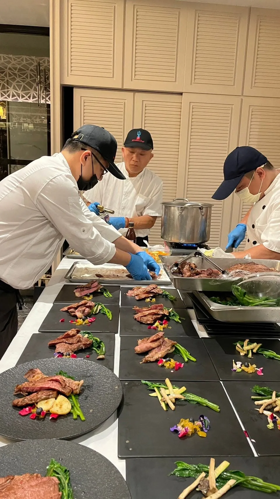

網路上「私廚到府」「到府私廚推薦」的資訊很多，但大多是條列式的名單，缺少實際能用來判斷的標準。與其比較誰的照片比較精緻，不如先掌握這 5 個真正影響體驗品質的重點。
有些私廚服務其實是固定套餐、只是換了擺盤名稱，真正的客製化應該能依人數、預算、飲食禁忌與主題重新設計菜單，而不是從既有清單裡挑選。
餐廳廚房跟一般家用廚房的條件差很多，缺乏到府經驗的主廚容易在設備限制下亂了陣腳。挑選時可以直接問對方「處理過多少場到府服務」，而不是只看餐廳資歷。
交通費、器材費、服務人力是否包含在報價裡，最好在確認前就問清楚，避免結帳時出現預期外的加價項目。
真實執行過的案例照片跟客戶評價，比制式化的行銷文案更能反映實際水準，可以直接參考服務案例頁面。
好的私廚會誠實告知食材限制與現場條件的可行範圍，而不是為了成交而什麼都答應。這種誠實度，往往才是決定當天體驗好壞的關鍵。
如果你正在找私廚到府推薦、想進一步了解舒苑的服務方式，歡迎直接聯繫團隊，會有專人依你的實際需求提供更詳細的說明與建議。
提供活動日期、人數與場地，我們將提供最適合的私廚方案與報價建議。